本巣･根尾から徳山ダム方面と､福井まで足をのばしたときのお店です｡
南欧風のおしゃれなカフェ｡せきサイベストカフェオブザイヤー2016受賞店
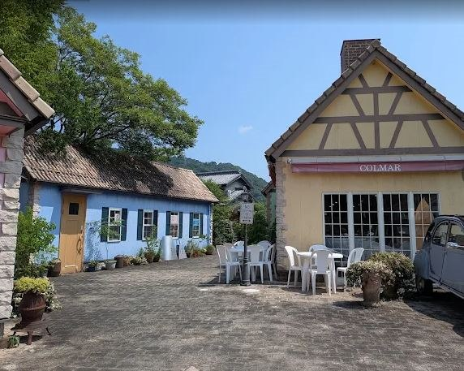
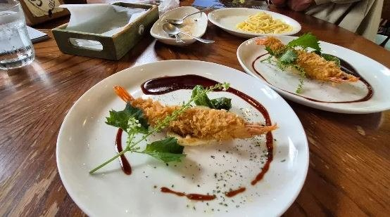
本巣にある､南欧風のおしゃれなカフェです｡1,000円ちょっとで食べられるランチはコース料理という､コストパフォーマンス抜群で､しかもとてもおいしいお店です｡
せきサイベストカフェオブザイヤー2016受賞店です｡
藤橋の山あいにある､トトロハウスのような隠れ家カフェ
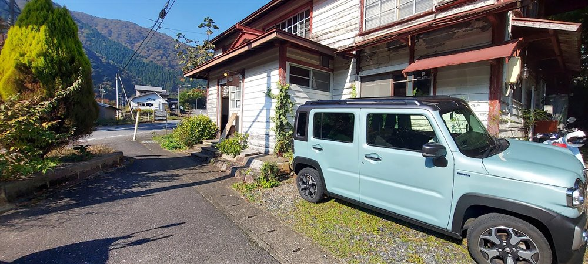
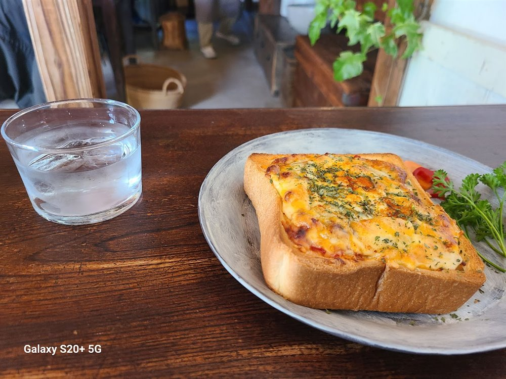
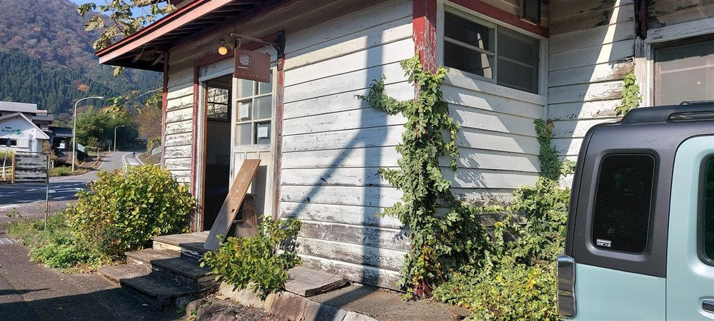
根尾から徳山ダム方面へ走るライドで立ち寄ったカフェです｡藤橋の道の駅に寄ろうと思っていたところ､トトロハウスのようなおしゃれな建物が目に入り､こちらにしました｡
いただいたのはチーズがとろけるトースト｡室内はほどよいアンティーク感で､ゆっくり過ごせます｡撮影の許可もいただいています｡
鳥越峠へ向かう旧街道ぞいにある､おしゃれな里山のカフェ｡
美濃と近江の国境､鳥越峠へ向かう旧街道ぞいにあるカフェです｡2017年7月のライドでは､朝のすがすがしい道を北上する途中で､おしゃれな外観が目にとまりました｡
旧街道は､バイパスを通る車が多いためほとんど車が通らず､のんびり走れる快適な道です｡このあと夜叉が池のさと･坂内に入り､道の駅 さかうちでクレープを味わうのが､このエリアのお楽しみです｡
根尾谷の麓にある､日替わりランチ500円の食堂
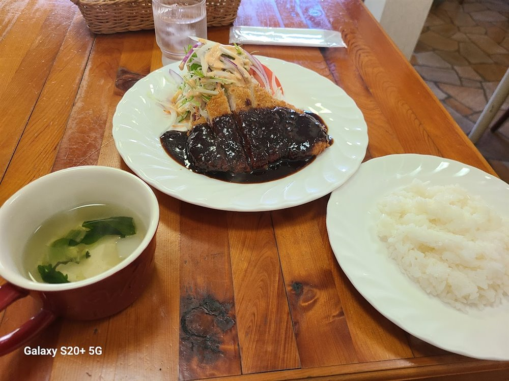
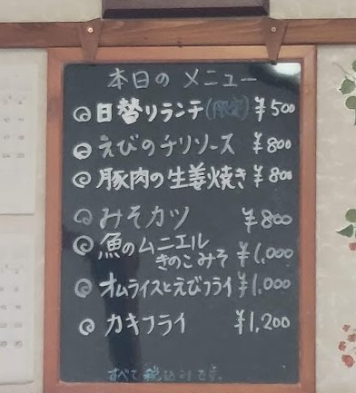
根尾谷の麓にある食堂で､ずっと気になっていたお店です｡11時に着いたときはすでに満席の大人気ぶりでした｡日替わりランチがなんと500円｡
この日は前から決めていた味噌カツを｡スープ､味噌カツ､ご飯に季節のデザートがついて､最後にコーヒーまで出てきます｡お得すぎるおすすめの定食屋さんです｡
福井の美山で味わう､走ったあとのソースカツ丼の定食屋さん
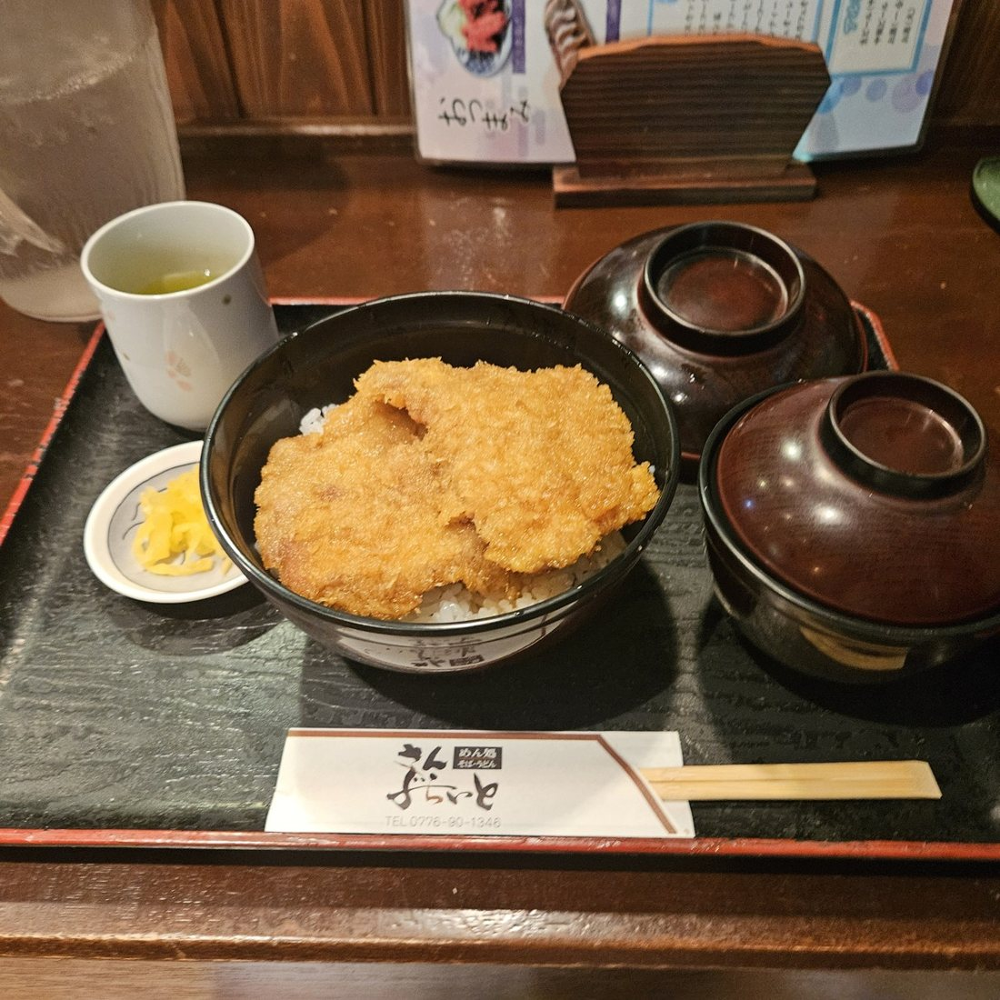
冠山道路開通記念サイクリングで､永平寺から美山の町へ移動したあとに立ち寄った定食屋さんです｡お昼にいただいたのはソースカツ丼で､走ったあとの体にうれしい一杯でした｡
お店のメニューには定食やどんぶり､おろしそばなど､ライドの合間に選びやすい品が並んでいました｡ソースカツ丼はボリュームがあり､永平寺への上りで脚を使ったあとの腹ごしらえにぴったりです｡
美山の裏道は木陰や川があり､新しい集落も楽しめるルートです｡福井・池田町から永平寺エリアを回る一日コースの途中で､ひと息つける一軒としておすすめします｡
徳山ダム･能郷白山･冠山方面へ向かう前の､補給必須のお店
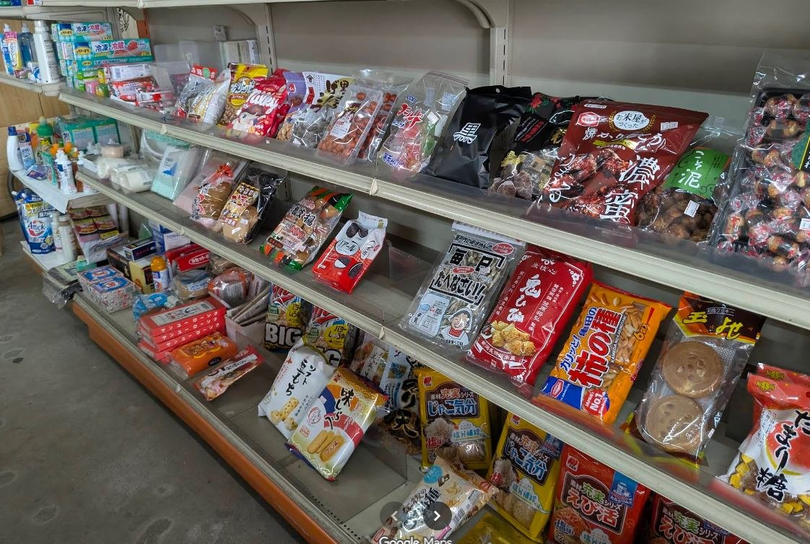
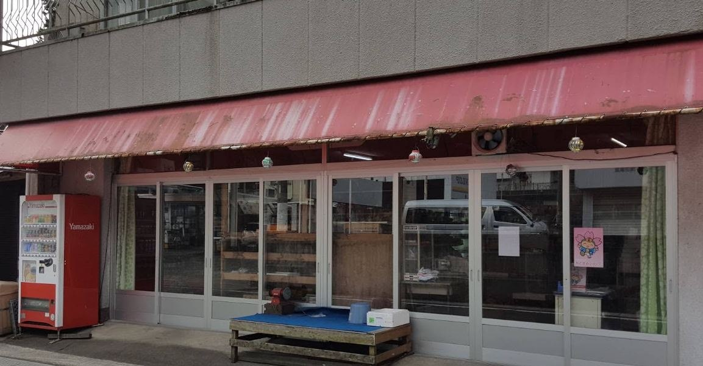
本巣の樽見にあるお店です｡ここから徳山ダムへ向かう馬坂峠や､能郷白山､冠山峠に向かうときは､補給が必須です｡
ドリンクやパンなどが豊富にそろいます｡これから始まる大峠越えに備えましょう｡
地元の野菜と漆器､五平餅の香りがただよう､道の駅の完成形
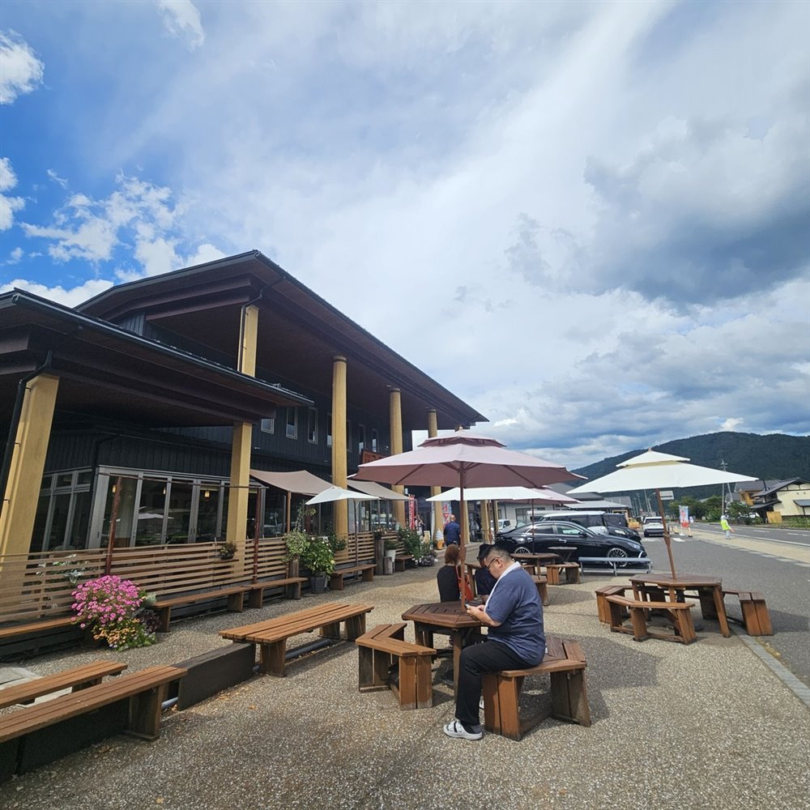
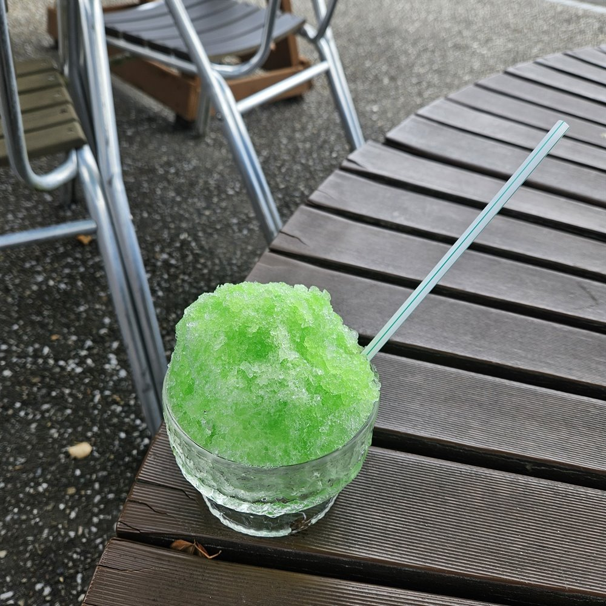
冠山道路の開通を記念して､福井県の池田町から走った､2026年8月のサイクリングのゴール地点です｡地元の野菜､漆器､五平餅の香ばしい匂い…と､道の駅の完成形の一つだと思います｡
暑い日だったので､涼を求めてかき氷をいただきました｡次の目的地のかずら橋に向けて､ここで元気を回復です｡
紅葉の名所･谷汲の入口｡ベンチでコーヒーを飲んでひと休み
揖斐川町谷汲にある道の駅です｡谷汲名物の赤い橋を渡って､関から約35〜37kmの位置にあります｡
秋のセキサイ西濃ライドでも､紅葉を楽しみながら立ち寄るポイントです｡ベンチに座ってコーヒーを飲みながら､仲間とおしゃべりするのにぴったりです(2016年･2021年)｡
星のふるさと｡徳山ダム方面へ向かうライダーとサイクリストの待ち合わせ場所
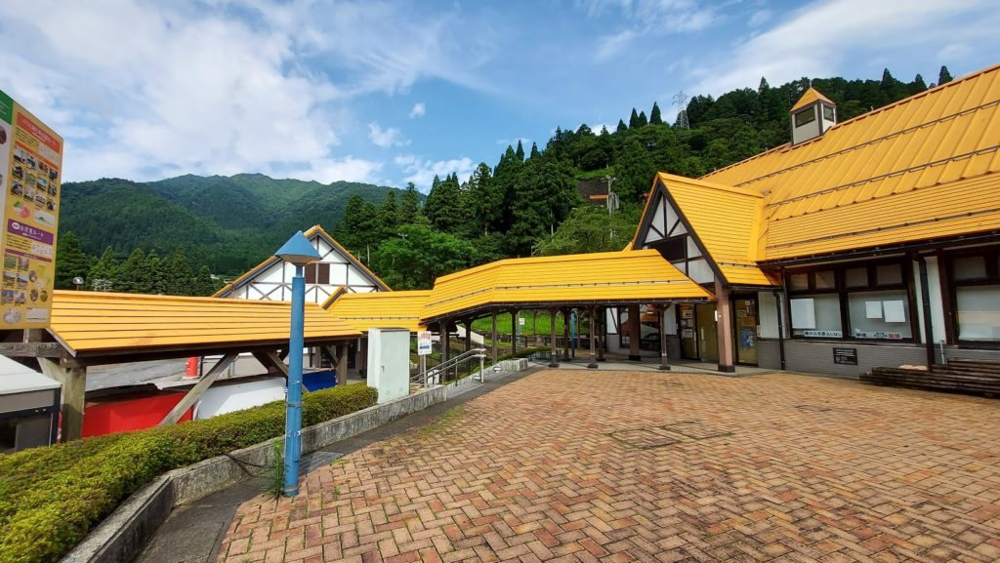
｢星のふるさと｣として知られる､揖斐川町藤橋の道の駅です｡黄色い屋根がかわいらしく､朝の7時台はバイクツーリングの待ち合わせスポットになっています｡
朝のすがすがしい時間に立ち寄ると､とても気持ちのいいところです(2021年)｡徳山ダムや､近くのカフェ･ノタリへ向かうときの休憩にもおすすめです｡
2025年9月｡ここから福井の奥座敷へ､永平寺･宝慶寺･六呂師高原のサイクリング
福井県大野市の道の駅 荒島の郷です｡2025年9月､ここを朝6時半にスタートして､龍双ヶ滝や宝慶寺､六呂師高原をめぐるサイクリングへ出かけました｡
越前大野の南側は､走る車も少なくてとても快適です｡福井まで足をのばしたとき､拠点にしやすい道の駅です｡
※紹介は､トマト工業ブログ(2016年〜2026年)の記事をもとにしています｡営業時間や定休日は変わることがあるので､お出かけの前にご確認ください｡